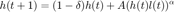

Contents
function test_allLH
Runs all tests
Also serves as a brief overview of the code
Cell arrays
Make a cell array of numbers into a vector
cellLH.cell2vector_test;
Economics
Ben-Porath model

BenPorathLHtest; % % Nested CES production function CesNestedLHtest; % % CRRA utility and permanent income model UtilCrraLHtest; % % CES production function ces_lh_test; % % Table of symbols. Generates a latex preamble with newcommands, so that model notation does not % have to be hard coded SymbolTableLHtest; % % Geometric sums econLH.geo_sum_test; % % Copy a set of figures / tables to a common directory (to be included in a paper) econLH.PaperFiguresTest; % % Perpetual inventory method econLH.perpetual_inventory_test; % % Maintain a list of unique names (e.g. file names for model results) econLH.VariableListLHtest; % % Regress log wages on time and age dummies econLH.WageRegressionLHtest;
Files
% RDIR is taken from the Matlab file exchange and used in some of my file routines % rdir cannot be in a subdir that's not on the path rdir_test % Test whether a file contains a set of strings filesLH.does_file_contain_strings_test % Find all files that contain at least one of a set of strings filesLH.find_files_containing_strings_test % Find files by name filesLH.find_files_by_name_test % Multi file search and replace filesLH.replace_text_in_file_test;
Matrix
% Apply a scalar function to one dimension of an array of arbitrary size matrixLH.apply_scalar_function_test; % Given a matrix, find rows with valid observations for all columns matrixLH.find_valid_test;
String
% Does a string contain any of a set of other string?
stringLH.contains_test;
Vector
% For each element in x, find their position in y
vectorLH.find_matches_test;
end